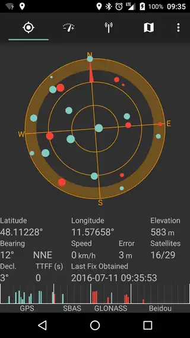
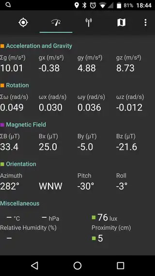

SatStat
خرائط وسفر
A diagnostic tool that displays data reported by sensors in the phone. GPS and other location providers: * Refresh AGPS data (if supported by phone) either manually, or when a new data connection is detected * Status notification whenever an app accesses GPS (configurable) * Location, speed, bearing
✓ ترخيص مفتوح (GPL-3.0-or-later) · آخر تحديث: 2025-04-22
3.6.0الإصدار
2.3 MBالحجم
GPL-3.0-or-laterالرخصة
Open in Kanzتحميل APK (2.3 MB)
Download APK
SHA-256: 1bef8f7b7d9c1b4c4a287c7628721c1f8999e5e02a4d154fd625671aa64f6756


تطبيقات تانية لنفس المطوّر (3)
More apps from this developer: com.vonglasow
امسح الكود لفتح صفحة التطبيق
Scan to open this app page
لو كنز مش متثبت عندك: نزّل متجر كنز.
Not installed? Get the Kanz store.